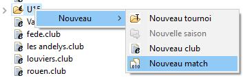

Editer un match.
Un match est toujours édité dans un fichier dont l’extension est ‘. game ’. C’est cette extension qui permet à l’outil d’invoquer l’éditeur de match lorsque l’on ouvre un fichier de ce type. De plus les fichiers . game doivent toujours être placés dans un répertoire de type catégorie. Cet emplacement permet à l’éditeur de fournir une aide à la saisie.
Pour éditer un match, il faut juste double cliquer sur le fichier du match ou créer un nouveau match à l’aide du menu nouveau -> nouveau match .
